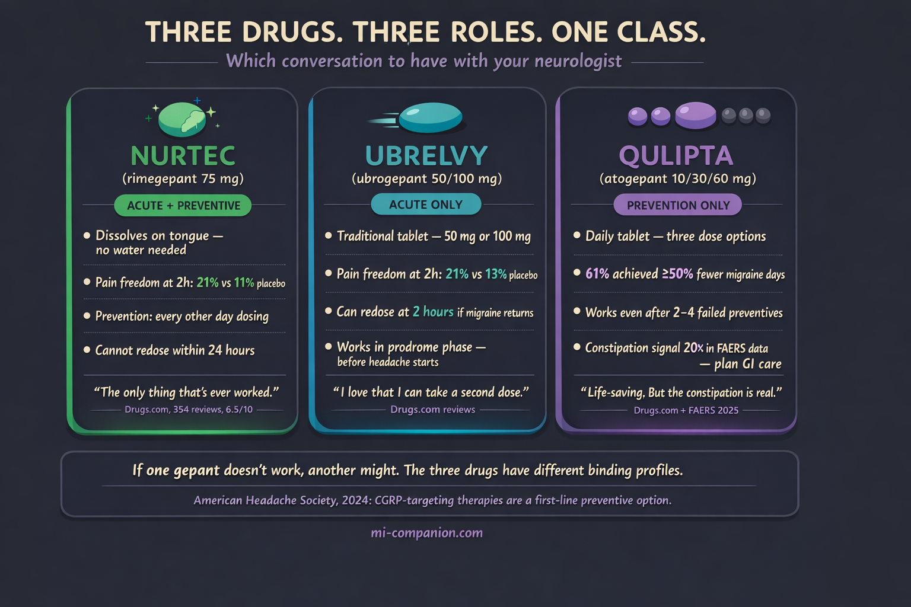

By Rustam Iuldashov
30 years lived experience with chronic migraine | Sources: 35 peer-reviewed references including The New England Journal of Medicine (n=910), The Lancet (n=1,351), JAMA (n=1,686), The Journal of Headache and Pain (n=13,859 AE reports) | Last updated: March 13, 2026
Medical Review: This content is based on peer-reviewed research from The New England Journal of Medicine, The Lancet, Lancet Neurology, JAMA, Headache, Journal of Headache and Pain, Frontiers in Pharmacology, Neurology Therapeutics, and Cephalalgia.
Important Notice: This article is for informational purposes only and does not replace professional medical advice. The author is not a licensed physician or healthcare professional. Always consult your doctor before making changes to your treatment plan.
Key Takeaways
- Gepants (Nurtec, Ubrelvy, Qulipta) are the first oral drugs designed specifically for migraine — they block CGRP without the cardiovascular risks of triptans[3][8]
- Nurtec is the only gepant approved for both acute and preventive use; Ubrelvy is acute-only (but allows redosing at 2 hours); Qulipta is prevention-only with three dose levels[10][12][14]
- Clinical pain freedom at 2 hours is roughly 20–21% — modest in absolute terms, but pain relief reaches ~60%, and rescue medication use drops significantly[10][11][12]
- Qulipta’s constipation signal is dramatically stronger in real-world FAERS data than clinical trial numbers suggest — plan GI management with your doctor from day one[26][27]
- If one gepant doesn’t work, another might — the three drugs have different pharmacokinetic profiles, and migraine involves multiple pathways beyond CGRP[31][32][35]
- The American Headache Society now recommends CGRP-targeting therapies as a first-line preventive option — you shouldn’t have to fail older drug classes first[9]
The migraine toolbox carried a contradiction at its center for three decades. Triptans — the gold standard for stopping an attack — worked by constricting blood vessels. If you had heart disease, high blood pressure, or even risk factors for stroke, your doctor delivered three words no migraine patient wants to hear: You can’t take those. And the drugs available for prevention — blood pressure pills, antidepressants, seizure medications — were borrowed from entirely different conditions, loaded with side effects that drove most people to quit within months.[1][2]
Then, between 2019 and 2021, three tablets reset the landscape.
Ubrelvy (ubrogepant). Nurtec (rimegepant). Qulipta (atogepant). The first oral medications designed from the ground up for migraine — and the first drug class that could serve both rescue and prevention without the vascular shadow that trailed triptans for decades.[3][4][5]
They belong to a class called gepants: small-molecule calcitonin gene-related peptide (CGRP) receptor antagonists. The name that matters is simpler. These are the pills that block the migraine signal at its source.
The Mechanism in 30 Seconds
During a migraine attack, nerve endings release a protein called CGRP (calcitonin gene-related peptide). Think of CGRP as a fire alarm that does two things at once: it dilates blood vessels and it broadcasts pain signals through the trigeminal nerve — the body’s largest cranial nerve and the main highway for head and face sensation.[6][7]
Gepants sit on the CGRP receptor like a key that doesn’t turn. They block the protein from binding. The pain signal goes quiet. Inflammation cools down. And unlike triptans, none of this requires blood vessels to constrict — which is why gepants carry no known cardiovascular risk and remain safe for patients with heart disease, uncontrolled hypertension, or a history of stroke.[3][8]
In March 2024, the American Headache Society made this official: CGRP-targeting therapies — including gepants — are now a first-line option for migraine prevention, alongside traditional treatments, without requiring patients to fail other drug classes first.[9] That statement reflected over a decade of clinical evidence and a clear message: these aren’t last-resort medications. For many patients, they’re the best starting point.
What the Trials Actually Found
Here’s where marketing and reality diverge. Gepant trial results are statistically significant. They are not the miracle numbers some ads suggest.
The headline metric for acute treatment is pain freedom at 2 hours: the percentage of patients who go from moderate-to-severe pain to zero pain within two hours of taking the pill.
Nurtec (rimegepant 75 mg): 21% achieved pain freedom at 2 hours versus 11% on placebo. Roughly double the placebo rate — but roughly 4 in 5 patients still had some pain at two hours.[10] A pooled analysis of nearly 5,000 patients across four phase 3 trials confirmed a consistent 20% pain-freedom rate.[11]
Ubrelvy (ubrogepant 50 mg): 21% pain freedom versus 13% placebo. Pain relief — meaning a drop from severe to mild, or moderate to none — reached 62%, versus 49% on placebo.[12][13]
Why the numbers seem modest
These trials used the strictest possible endpoint: complete pain freedom, not just improvement. When you track pain relief instead, the numbers climb: roughly 59% for Nurtec and 62% for Ubrelvy.[10][12] Rescue medication use drops sharply too — in the Nurtec pooled analysis, only 15.5% of patients reached for backup medication within 24 hours, compared to 28.9% on placebo.[11] That gap matters, because every rescue dose avoided is one step further from medication-overuse headache.
For prevention, the data comes from Qulipta (atogepant) and Nurtec (taken every other day).
Qulipta 60 mg daily: In the ADVANCE trial (n=910), patients lost 3.7 monthly migraine days versus 1.6 for placebo. Sixty-one percent of patients cut their migraine days in half or more.[14][15] In the PROGRESS trial for chronic migraine, the 60 mg dose reduced monthly migraine days by 6.9 compared to 5.1 for placebo.[16] And the ELEVATE trial proved something critical: even patients who had failed 2 to 4 prior preventive medications still responded.[21]
Nurtec for prevention: Taken every other day, rimegepant reduced monthly migraine days by 4.3 at weeks 9–12, versus 3.5 for placebo — a statistically significant but modest difference of 0.8 days.[17] A head-to-head trial against galcanezumab (Emgality) showed near-identical response rates: 61% versus 62%.[18] That’s significant — an oral pill performing equally to a monthly injection.
Three Drugs, Three Personalities
Same mechanism. Different clinical profiles. The choice matters.
Nurtec: The Swiss Army Knife
The only gepant approved for both acute and preventive use. It dissolves on the tongue without water, which matters when nausea makes swallowing a pill feel impossible. One 75 mg tablet for an attack; one tablet every other day for prevention. For patients who want a single medication that covers both roles, Nurtec is the only option.[10][17][19]
Ubrelvy: The Acute Specialist
Approved only for stopping attacks (never prevention), it comes in 50 mg and 100 mg tablets. Its edge: you can take a second dose 2 hours after the first if the migraine returns — something Nurtec doesn’t allow within 24 hours. With the shortest half-life in the class (~5–7 hours versus ~11 hours for the others), it clears your system fastest. And it’s the first gepant to demonstrate efficacy when taken during the prodrome — the warning phase of subtle symptoms like yawning, neck stiffness, or food cravings that can appear hours before the headache begins.[12][13][20]
Qulipta: The Dedicated Preventive
Designed from the start for daily use, never for acute rescue. Three dose options (10 mg, 30 mg, 60 mg) give doctors room to start low and adjust. For the patient who says “I need fewer attacks, period” — and especially for those who’ve failed prior preventives — Qulipta earned its place.[14][15][21]

What Patient Forums Reveal That Trial Data Doesn’t
Clinical trials measure averages across hundreds of patients. Patient forums capture the outliers — the euphoria, the failures, and the messy daily reality of living on a medication. After reviewing hundreds of accounts across r/migraine, Drugs.com, and WebMD, distinct patterns emerge.
Nurtec commands the most enthusiastic community. On Drugs.com, it carries a 6.5/10 average from 354 reviews, with 54% positive.[22] The praise repeats like a chorus: “Melts my migraine in 30 minutes,” “game-changer,” “the only thing that’s ever worked.” The orally disintegrating format earns specific gratitude during nausea-heavy attacks. But the 28% who report negative experiences describe a familiar frustration: nausea from the medication itself, migraines that return within 24 hours (with no second dose allowed), and a minority for whom the drug simply does nothing.[22][23]
One theme cuts across every forum, louder than any side effect: cost. Patient after patient describes insurance battles, denied prior authorizations, and the specific cruelty of finding a drug that works and being unable to afford it. A Medicare patient described stopping Nurtec after nine months of significant migraine reduction — because the copay was unsustainable.[22]
Ubrelvy has a quieter following but fierce loyalty. Patients prize the redosing option at two hours. The most common disappointment: speed. Some need 2–3 hours for meaningful relief — slower than triptans conditioned them to expect.[12]
Qulipta splits the community in half. The positive testimonials are staggering: “After 30 years of chronic migraines, I am free.” Another patient went from 20 migraines per month to 1 or 2, lost 21 pounds over six months from decreased appetite, and called it “a big deal for someone 4 stone overweight for 12 years.”[24] Others describe regaining the ability to drive, to make plans, to be present for their children.
But the negative reports cluster around a constellation of gut-related side effects that clinical trials, frankly, understate.
The Qulipta Gut Problem: What the Numbers Don’t Capture
This deserves its own conversation, because it’s the question patients ask most — and the one trial data answers least honestly.
In clinical trials, Qulipta’s top side effects were nausea (5–9%), constipation (6–8%), and fatigue (4–5%).[15][25] Those percentages look manageable on paper.
The real-world data paints a different picture.
A 2025 pharmacovigilance analysis of 3,672 atogepant-related adverse event reports in the FDA’s FAERS database found constipation was the single most reported adverse event — with a reporting odds ratio nearly 20 times higher than background rates.[26] For perspective, nausea was the top signal for Nurtec and fatigue for Ubrelvy — but neither showed anywhere near the same disproportionate signal strength.[26][27]
On forums, the constipation descriptions go well beyond “inconvenient.” Patients report days without bowel movements despite Miralax, prunes, increased water intake, and stool softeners. Bloating so severe they initially suspected a separate diagnosis. One review captured the tension precisely: “It has been very effective in regards to my migraines. However, the side effects of bloating, horrible gas, nausea, and constipation are unbearable.”[24] Others describe a jarring rebound when stopping: “My body got so used to being constipated that once I stopped, it was like I had a stomach virus.”[24]
Weight loss — driven by suppressed appetite and ongoing nausea — surfaces more frequently in real-world reports than initial trial data suggested. Higher doses and longer duration correlate with greater weight loss.[28] Welcome for some, concerning for others.
Two postmarketing safety signals now appear on Qulipta’s label: hypertension (sometimes emerging within the first week) and Raynaud’s phenomenon — painful spasm of blood vessels in fingers and toes.[25][29] Both have been reported with other CGRP-targeting drugs as well, but they matter because they complicate the “no cardiovascular risk” narrative sometimes applied too broadly to the entire gepant class.
Practical Tip From Experienced Patients
Starting at 30 mg and escalating slowly appears to reduce GI distress significantly. One experienced forum user distilled the wisdom: “Try it for 1 month at 60 mg. Severe nausea at first — about 2 weeks. It will lessen. Bad constipation. Drink at least 1L of liquids per day, take a stool softener, eat fiber.”[30]
Why It Works for You But Not for Your Friend
This may be the most important conversation about gepants — and the one least reflected in the marketing.
Migraine is not one disease. It’s a syndrome with multiple pathways, and CGRP is just one of them. Some patients’ attacks are driven primarily by cortical spreading depolarization — a slow wave of electrical silence across the brain’s surface — that activates C-fiber pathways completely independent of CGRP.[31] For these patients, blocking CGRP simply doesn’t reach the dominant mechanism.
Central sensitization plays a role too. In chronic migraine, persistent sensitization of central neurons can become independent of peripheral CGRP signaling. One useful clinical marker: non-ictal allodynia — pain from normally painless touch, even between attacks — appears to predict poorer response to anti-CGRP therapies.[31][32]
Pharmacokinetics add another layer of variability. Age, sex, body weight, and genetic differences in CYP3A4 metabolism influence how much active drug reaches CGRP receptors and for how long. Most clinical trials did not stratify participants by these factors, which means the “average” efficacy numbers mask real individual variation.[33]
Then there’s the other extreme: the super-responders. Roughly 20–30% of patients on CGRP-targeting therapies experience 75% or greater reduction in migraine days — far exceeding the average 50% responder rates.[34] They tend to have shorter migraine histories and less central sensitization.
If one gepant fails, the class hasn’t failed. The three approved gepants differ in receptor binding affinities and pharmacokinetic profiles. Switching between them — or between a gepant and a monoclonal antibody — has shown benefit in real-world studies. The conversation with your doctor shouldn’t end at the first “it didn’t work.”
While gepants are changing the landscape of routine migraine care, it is crucial to remember they are not designed for every type of head pain.
⚠️ When to Go to the Emergency Room
Gepants treat migraine — not headache emergencies. Seek immediate medical care if you experience: the worst headache of your life (thunderclap headache); headache with fever, stiff neck, confusion, or seizures; headache after head trauma; new headache with vision loss; signs of stroke (sudden weakness, speech difficulty, facial drooping); or severe allergic reaction to any medication (throat swelling, difficulty breathing, hives).
If you are experiencing any of these symptoms, call your local emergency number immediately. Do not use this article to self-diagnose or delay emergency care.
⚕️ Important Medical Disclaimer
This article is for informational and educational purposes only and does not constitute medical advice, diagnosis, or treatment. The author, Rustam Iuldashov, is not a licensed physician, neurologist, or healthcare professional. He is a patient advocate with 30 years of personal experience living with chronic migraine.
All clinical claims in this article are sourced from peer-reviewed research published in indexed medical journals. Study designs and sample sizes are noted where applicable.
Gepants are prescription medications (except Nurtec, which is available without prescription in some markets). Do not start, stop, or change dosages without discussing with your doctor. If you are pregnant, planning pregnancy, or breastfeeding, discuss the safety data for each specific gepant with your healthcare provider, as research in these populations remains limited.
Always consult a qualified healthcare provider for questions about your individual health, migraine treatment, or medication decisions. This content was last reviewed for accuracy on March 13, 2026.
References
- Charles AC, Digre KB, Goadsby PJ, Robbins MS, Hershey A. “Calcitonin gene-related peptide-targeting therapies are a first-line option for the prevention of migraine: An American Headache Society position statement update.” Headache, 64(4):333-341 (2024). doi:10.1111/head.14692. Study design: Expert consensus/Position statement.
- Vandervorst F, Van Deun L, Van Dycke A, et al. “CGRP monoclonal antibodies in migraine: an efficacy and tolerability comparison with standard prophylactic drugs.” J Headache Pain, 22(1):128 (2021). doi:10.1186/s10194-021-01335-2. Study design: Systematic review. n=multiple trials.
- Jakubowska A, Sowa-Kućma M. “Gepants: targeting the CGRP pathway for migraine relief.” Front Pharmacol, 16:1708226 (2025). doi:10.3389/fphar.2025.1708226. Study design: Narrative review.
- Scott LJ. “Ubrogepant: first approval.” Drugs, 80(3):323-328 (2020). doi:10.1007/s40265-020-01264-5. Study design: Drug review.
- Blair HA. “Rimegepant: a review in the acute treatment and preventive treatment of migraine.” CNS Drugs, 37:255-265 (2023). doi:10.1007/s40263-023-00988-8. Study design: Drug review.
- Ho TW, Edvinsson L, Goadsby PJ. “CGRP and its receptors provide new insights into migraine pathophysiology.” Nat Rev Neurol, 6(10):573-582 (2010). doi:10.1038/nrneurol.2010.127. Study design: Review.
- Rashid A, Manghi A. “Calcitonin Gene-Related Peptide Receptor.” StatPearls (2023). PMID:32809614. Study design: Reference text.
- Mullin K, et al. “Gepants for acute and preventive migraine treatment: a narrative review.” J Clin Med, 11(6):1656 (2022). doi:10.3390/jcm11061656. Study design: Narrative review.
- Charles AC, Digre KB, Goadsby PJ, et al. “CGRP-targeting therapies are a first-line option for the prevention of migraine: An AHS position statement update.” Headache, 64(4):333-341 (2024). doi:10.1111/head.14692. Study design: Position statement.
- Croop R, Goadsby PJ, Stock DA, et al. “Efficacy, safety, and tolerability of rimegepant orally disintegrating tablet for the acute treatment of migraine: a randomised, phase 3, double-blind, placebo-controlled trial.” Lancet, 394(10200):737-745 (2019). doi:10.1016/S0140-6736(19)31606-X. Study design: RCT. n=1,351.
- Tepper S, et al. “Pooled analysis of four phase 3 randomized placebo-controlled trials of rimegepant for acute treatment of migraine.” Presented at MTIS 2024, London. Study design: Pooled analysis of 4 RCTs. n=4,895.
- Dodick DW, Lipton RB, Ailani J, et al. “Ubrogepant for the treatment of migraine.” N Engl J Med, 381(23):2230-2241 (2019). doi:10.1056/NEJMoa1813049. Study design: RCT (ACHIEVE I). n=1,672.
- Lipton RB, Dodick DW, Ailani J, et al. “Effect of ubrogepant vs placebo on pain and the most bothersome associated symptom in the acute treatment of migraine: the ACHIEVE II randomized clinical trial.” JAMA, 322(19):1887-1898 (2019). doi:10.1001/jama.2019.16711. Study design: RCT. n=1,686.
- Ailani J, Lipton RB, Goadsby PJ, et al. “Atogepant for the preventive treatment of migraine.” N Engl J Med, 385(8):695-706 (2021). doi:10.1056/NEJMoa2035908. Study design: Phase 3 RCT (ADVANCE). n=910.
- QULIPTA (atogepant) prescribing information. AbbVie Inc., North Chicago, IL (2025). FDA label.
- Pozo-Rosich P, et al. “Atogepant for the preventive treatment of chronic migraine (PROGRESS): a randomised, double-blind, placebo-controlled, phase 3 trial.” Lancet, 402:775-785 (2023). doi:10.1016/S0140-6736(23)01049-8. Study design: Phase 3 RCT. n=778.
- Croop R, Lipton RB, Kudrow D, et al. “Oral rimegepant for preventive treatment of migraine: a phase 2/3, randomised, double-blind, placebo-controlled trial.” Lancet, 397(10268):51-60 (2021). doi:10.1016/S0140-6736(20)32544-7. Study design: Phase 2/3 RCT. n=747.
- Schwedt TJ, Myers Oakes TM, Martinez JM, et al. “Comparing the efficacy and safety of galcanezumab versus rimegepant for prevention of episodic migraine: results from a randomized, controlled clinical trial.” Neurol Ther, 13(1):85-105 (2024). doi:10.1007/s40120-023-00556-8. Study design: RCT. n=580.
- NURTEC ODT (rimegepant) prescribing information. Pfizer Inc. (2025). FDA label.
- Dodick DW, Goadsby PJ, Schwedt TJ, et al. “Ubrogepant for the acute treatment of migraine attacks during the prodrome: a phase 3, multicentre, randomised, double-blind, placebo-controlled, crossover trial.” Lancet, 402(10419):2307-2316 (2023). doi:10.1016/S0140-6736(23)01552-0. Study design: Phase 3 crossover RCT. n=518.
- Tassorelli C, Nagy K, Pozo-Rosich P, et al. “Safety and efficacy of atogepant for the preventive treatment of episodic migraine in adults for whom conventional oral preventive treatments have failed (ELEVATE): a randomised, placebo-controlled, phase 3b trial.” Lancet Neurol, 23(4):382-392 (2024). doi:10.1016/S1474-4422(24)00025-5. Study design: Phase 3b RCT. n=615.
- Drugs.com User Reviews: Nurtec ODT. Accessed March 2026. Patient-reported outcomes (real-world). n=354 reviews.
- WebMD User Reviews: Nurtec ODT. Accessed March 2026. Patient-reported outcomes (real-world).
- Drugs.com User Reviews: Qulipta (atogepant). Accessed March 2026. Patient-reported outcomes (real-world).
- QULIPTA FDA prescribing information (revised 2025). accessdata.fda.gov. FDA label.
- Song Q, Gao S, Tan Y. “Adverse events associated with gepants: a pharmacovigilance analysis based on the FDA adverse event reporting system.” J Headache Pain, 26(1):147 (2025). doi:10.1186/s10194-025-02091-3. Study design: Pharmacovigilance analysis (FAERS). n=13,859 AE reports.
- Li Y, et al. “Real-world study of adverse events associated with gepant use in migraine treatment based on the VigiAccess and FAERS databases.” Front Pharmacol, 15:1431562 (2024). doi:10.3389/fphar.2024.1431562. Study design: Pharmacovigilance analysis. n=23,542 AE reports.
- AbbVie Inc. “Weight loss with atogepant during the preventive treatment of migraine: a pooled analysis.” Presented at IHS 2024. Study design: Pooled analysis.
- FDA Safety Communication. Postmarketing additions to Qulipta label: hypertension, Raynaud’s phenomenon (2025).
- Drugs.com User Reviews: Qulipta — constipation-specific filter. Accessed March 2026. Patient-reported (real-world).
- Labastida-Ramírez A, Rubio-Beltrán E, et al. “Mode and site of action of therapies targeting CGRP signaling.” J Headache Pain, 24:125 (2023). doi:10.1186/s10194-023-01644-8. Study design: Review.
- Lee MJ, Al-Karagholi MA, Reuter U. “New migraine prophylactic drugs: current evidence and practical suggestions for non-responders.” Cephalalgia, 43(2) (2023). doi:10.1177/03331024221146315. Study design: Narrative review.
- Van den Brink AM, et al. “Sex-related differences in response to anti-CGRP therapies.” Presented at IHS 2024. Study design: Subgroup analysis.
- Association of Migraine Disorders. “15 Frequently Asked Questions About CGRP Monoclonal Antibodies and Gepants.” Updated August 2024. migrainedisorders.org. Expert-reviewed FAQ.
- Ashina M, Tepper SJ, Reuter U, et al. “Once-daily oral atogepant for the long-term preventive treatment of migraine: findings from a multicenter, randomized, open-label, phase 3 trial.” Headache, 63(1):79-88 (2023). doi:10.1111/head.14439. Study design: Open-label Phase 3. n=744.

How We Create Content
- Peer-reviewed sources only. The New England Journal of Medicine, The Lancet, Lancet Neurology, JAMA, Headache, Journal of Headache and Pain, Frontiers in Pharmacology, Neurology Therapeutics, Cephalalgia, CNS Drugs, Clinical Nutrition.
- Real-world evidence included. FAERS pharmacovigilance data (13,859+ adverse event reports), VigiAccess global database (23,542+ reports), and patient reviews from Drugs.com, WebMD, and Reddit r/migraine.
- Study transparency. Study design and sample sizes noted for all clinical references.
- Source verification. All claims backed by numbered references with DOI links.
- Experience + Science. 30 years personal migraine experience combined with peer-reviewed evidence.
- Regular updates. Articles reviewed when significant new research emerges.
- No conflicts of interest. No funding from Pfizer, AbbVie, or any pharmaceutical company manufacturing gepant medications.
Track Your Gepant Response
Migraine Companion helps you log attacks, medication timing, and side effects together — so you and your neurologist can see whether your gepant is reducing frequency and severity over time, or whether it’s time to try a different one.
Last reviewed: March 2026
Next scheduled review: September 2026